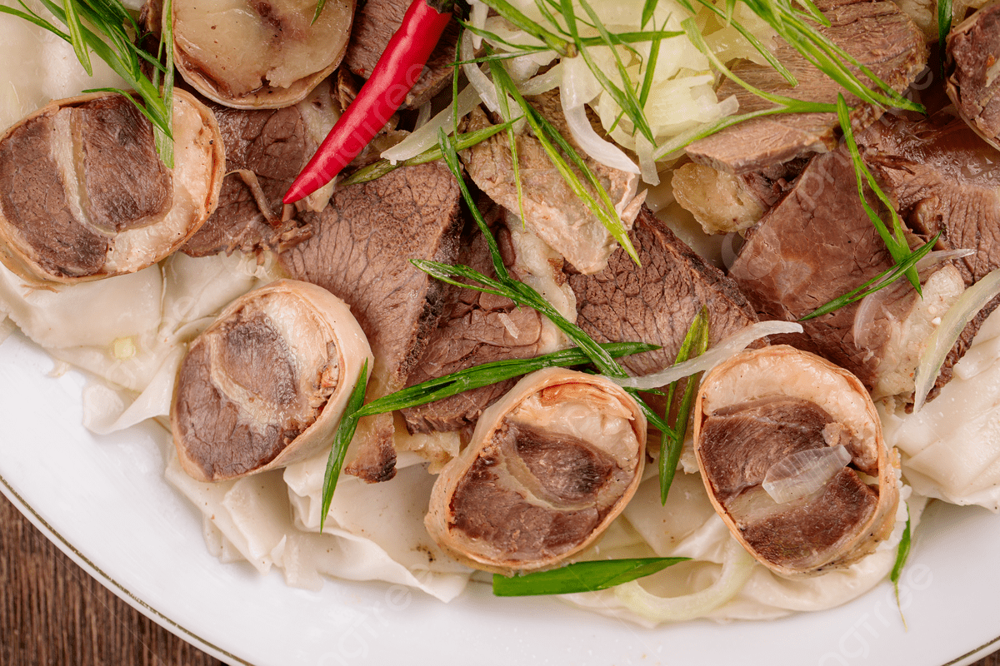

Back
Kazy

Description
Kazy is a traditional, highly prized horse meat sausage. It is made by stuffing the rib meat
into natural casings and is often served chilled as an appetizer or sliced over Beshbarmak.
Ingredients
- 1 kg Horse meat (rib area)
- Horse fat
- Natural horse casing
- 2 tbsp Salt
- 1 tbsp Black pepper
- 4 cloves Garlic, minced
Steps
- Cut the meat and fat into long strips.
- Rub the meat thoroughly with salt, pepper, and garlic; let it marinate for several hours.
- Carefully stuff the mixture into the cleaned casing and tie the ends tightly.
- Place the sausage in a pot of cold water and bring to a boil.
- Simmer on low heat for at least 2 hours. Note: Prick the casing with a needle once it starts to boil to prevent bursting.